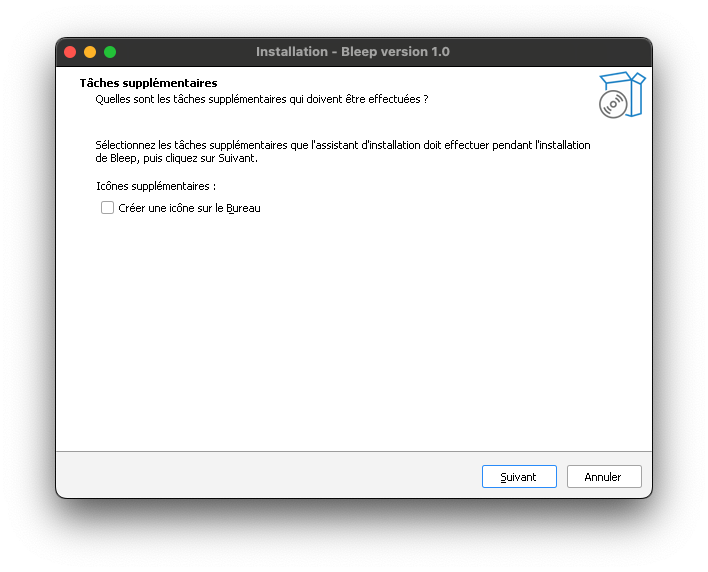
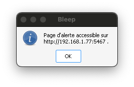

Comment installer et utiliser Bleep ?
Suivez ces étapes simples pour installer Bleep sur votre ordinateur :
- Téléchargez l’installeur correspondant à votre système d’exploitation.
- Assurez-vous que votre ordinateur est connecté à votre box.
- Ouvrez l’installeur et suivez les instructions à l’écran.
- Une fois le logiciel installé, une fenêtre pop-up s’affichera à l’écran. S’il ne s’affiche pas, redémarrez votre ordinateur.
- Vous pouvez désormais entrer le lien affiché dans le pop-up sur votre téléphone. Attention, votre téléphone doit être connecté au même réseau que votre ordinateur pour accéder à l’interface.

